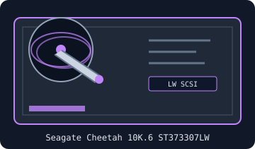

[ IDENTIFIED HDD // MODEL-SPECIFIC RECORD ]
Seagate Cheetah 10K.6 ST373307LW
73.4 GB; 3.5-inch; Cheetah 10K.6 parallel SCSI. This exact SKU record distinguishes its connector suffix and generation; verify the label and firmware before installation or recovery.

IDENTIFICATION: Preserve the full model and suffix from the nameplate. This is parallel SCSI, not SAS; matching drive generation, connector, signaling, SCSI ID and termination to the host bus is essential.
Recorded specifications
| Exact model / SKU | Seagate Cheetah 10K.6 ST373307LW |
|---|---|
| Formatted capacity | 73.4 GB (manufacturer decimal GB convention; firmware-visible capacity may vary by configuration) |
| Form factor | 3.5-inch enterprise HDD |
| SCSI generation / interface | Cheetah 10K.6 parallel SCSI; Ultra320 SCSI, LVD/SE bus support (backward operation depends on the entire bus) |
| Connector | 68-pin wide SCSI (LW; LVD/SE-capable) |
| Spindle speed | 10,000 RPM |
| Cache | 8 MB cache buffer |
| Logical sectors | 512 bytes per logical sector in the documented default format. Actual block count depends on exact firmware and any low-level reformatting; query SCSI READ CAPACITY rather than infer from nominal GB. |
| Termination / jumper compatibility | Set a unique target ID with the documented jumper block before power-up. Match bus mode to controller/cabling and preserve the documented term-power option; a term-power jumper does not itself terminate the bus. Install compatible LVD termination only at the two physical bus ends. |
| Age and reliability context | early 2000s product generation. It was designed for enterprise duty, but any surviving unit is now aged; historical MTBF/AFR ratings are population statistics and cannot establish present condition. |
Compatibility, reliability & preservation
- Confirm that the host adapter supports parallel Ultra320 SCSI and the drive's LVD signaling; do not connect a parallel SCSI drive to a SAS-only or SATA-only port.
- Set a unique target ID with the documented jumper block before power-up. Match bus mode to controller/cabling and preserve the documented term-power option; a term-power jumper does not itself terminate the bus. Install compatible LVD termination only at the two physical bus ends.
- For a multidrop bus, give every target a unique SCSI ID and place compatible termination only at the two physical ends. LVD buses can fall back to single-ended operation if mixed devices/cabling require it, reducing speed; follow the exact manual and controller limits.
- Inspect the drive label, connector, jumper state, firmware, and any interposer before powering on. Do not hot-plug unless the backplane/controller design explicitly supports it.
- Record serial/model/firmware and preserve the original jumpers, carrier, controller, cabling, and acquisition notes. Keep independent verified copies; age, prior workload, heat, vibration and storage conditions dominate an individual drive's remaining life.
- If the device clicks, repeatedly spins up, disconnects, or returns read errors, stop unnecessary power cycles and writes. Prioritize a controlled read-only image or qualified recovery help; do not open the sealed assembly.
Sources & model documentation
- Seagate Cheetah 10K.6 SCSI Product Manual — manufacturer PDFSeagate Cheetah 10K.6 SCSI installation manual at ManualsLib (family documentation). The manual includes the specification table and bus configuration, installation, jumper and termination guidance.
- Cheetah 10K.6 SCSI manual copy / archiveIndependent manual-library or preservation copy for cross-reference; consult the Seagate-hosted manual as primary documentation.
- Model/family installation manual listingManual listing used to corroborate model-family coverage and installation diagrams; verify exact suffix before applying jumper settings.
Specifications above are scoped to the cited family manual; nominal family specifications do not guarantee the health or state of an individual used drive.